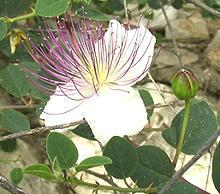
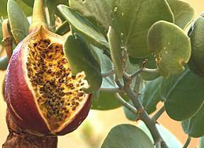

Caper bushes are found all around the Mediterranean region, but are also found in Madagascar, Central Asia, the Himalayas and in the Pacific Islands. Where they originated is unknown.
Capers are most known to Americans as pickled flower buds used as a flavoring element and garnish in salads, sauces and martinis. In the Mediterranean region where they are native, fruits are also pickled, as well as the leaves The photo specimens of pickled flower buds came from two bottles, both qualifying for the top "Non-pareilles" designation, though the large ones barely squeaked by at the 7 mm / 0.276 inch maximum. The small ones were typically 4 mm or less. Connoisseurs insist salted caper buds are superior to pickled, but those are costly and very difficult to find in North America.
More on Brassicales.
Capers are graded by size with the smaller considered more desirable. Sizes are:
Nasturtium buds are sometimes substituted for capers, having a similar taste. They are usually in the larger sizes.
Leaves are thick and succulent. They are also pickled, and are
sometimes cooked for use in salads. These usages are local, and not
exported. Caper leaves are also used in place of rennet in coagulating
some cheeses.


Neither flowers nor ripe fruit are much eaten (though perhaps flowers are
used as edible decorations on salads). These photos are provided
to illustrate the edible leaves, and because they were available from
earlier versions of this page. Caperberries split open when ripe,
exposing white flesh and black seeds. Photo of flower by
Lorsh contributed to the public domain. Photo of over-ripe fruit by
Florian Prischl /
Wikimedia Commons - distributed under license
Creative Commons
Attribution-Share Alike 3.0 - attribution required, notification
requested.
{kind=link}